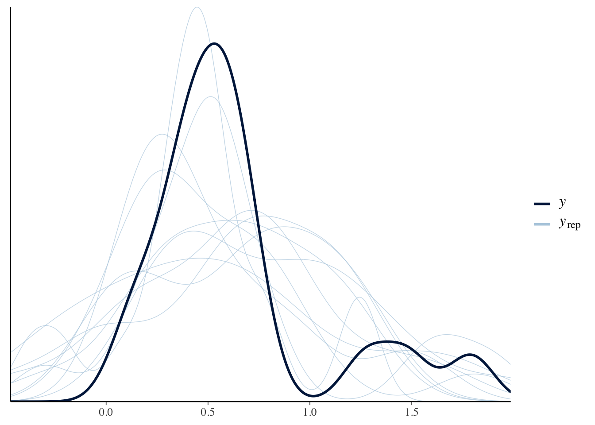
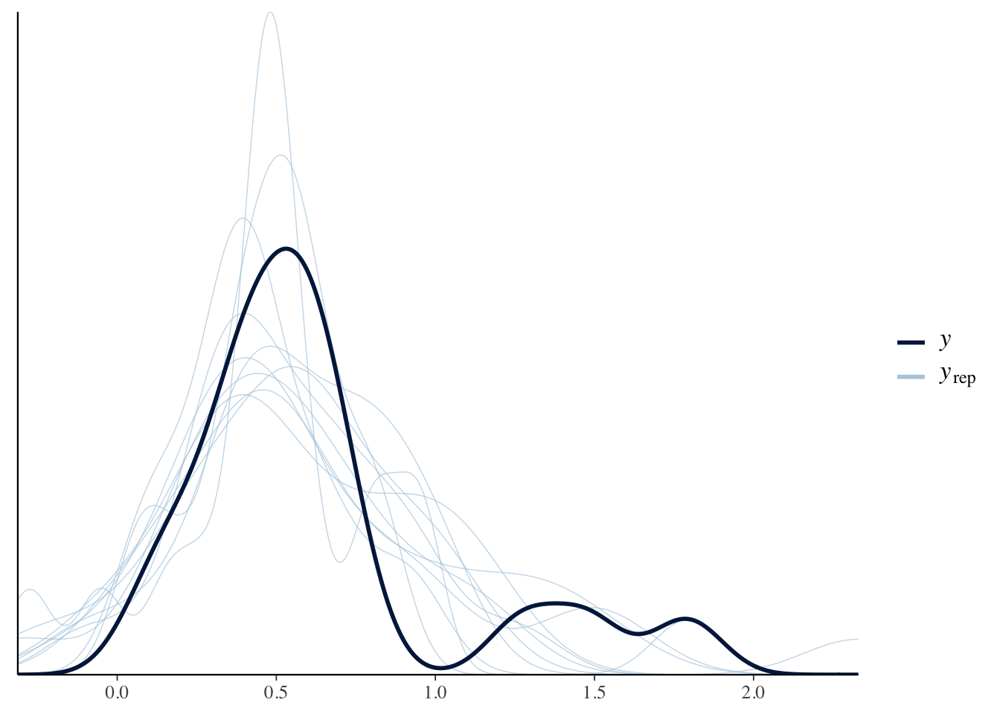

15 Meta-analysis and combining studies: Making inferences from previous work
My opinion on why this is so important (unfold):
it is lame how often I see ‘new experiments’ and ‘new studies’ that tread most of the ground as old studies, spend lots of money, get a publication and … ignore or pay lip service to the previous findings. There is tons of data out there that can inform new questions and bring better through re-analysis and combination with other data. Otherwise we are not actually building progress. This is why I became involved with a project I called ‘ExpArchive’, later working with projects such as GESIS’ X-Econ to try to encourage and facilitate data sharing in experimental economics, as well as the innovationsinfundraising.org project, which is now collaborating with the Lily Institute’s “revolutionizing philanthropy research” (RPR) project.
15.1 Notes: Christensen et al 2019, ch 5, ’Using all evidence, registration and meta-analysis
how the research community can systematically collect, organize, and analyze a body of research work
- Limitations to the ‘narrative literature review’: subjectivity, too much info to narrate
15.1.1 The origins [and importance] of study [pre-]registration
… Make details of planned and ongoing studies available to the community …. including those not (yet) published
Required by FDA in 1997, many players in medical community followed soon after
Turner ea (08) and others documented massive publication bias and misrepresentation
… but registration far from fully enforced (Mathieu ea ’09) found 46% clealy registered, and discrepancies between registered and published outcomes !
15.1.3 Meta-analysis
Key references: Borenstein ea ’09, Cooper, Hedges, and V ’09
15.1.3.1 Selecting studies
"some scholarly discretion regarding which measures are ‘close enough’ to be included… contemperanous meta-analyses on the same topic finding opposit e conclusions
‘asses the robustness… to different inclusion conditions’… see Doucouliagos ea ’17 on inclusion options
My opinion: this is the key barrier to meta-analysis in social science! How do we weight studies using different methodologies and in different contexts? The Bayesian Random Effects approach seems to offer some help here (this not to be confused with the random effects panel-data models discussed in standard Econometrics texts).
15.1.3.2 Assembling estimates
- Which statistic to collect?
Studies \(j \in J, j= 1..N_j\)
Relevant estimate of stat from each study is \(\hat{ \beta_j}\) with SE \(\hat{\sigma_j}\)
- Papers report several estimates (e.g., in robustness checks): which to choose, esp if author’s preferred approach differs from other scholars.
Ex from Hsiang, B, Miguel, ’13: links between extreme climate and violence
how to classify outcomes… interpersonal and intergroup… normalised as pct changes wrt the meanoutcome in that dataset
how to standardice climate varn measures… chose SD from local area mean (DR: this choice implicitly reflects a behavioural assumption)
\(\rightarrow\) ‘pct change in a conflict outcome as a fncn of a 1 SD schock to local climate’
15.1.4 Combining estimates
‘Fixed-effect meta-analysis approach’: assumes a single true effect’
DR: I’m not sure I agree on this assesment of why this is unlikely to be true in practice… ‘differences in measures’ (etc) seem to be a different issue
Equal weight approach: (Simply the average across studies… ugh)
Precision-weighted approach:
\[\hat{\beta}_{PW}= \sum_{j}p_j\hat{\beta}_j/ \sum_{j}p_j\]
where \(p_j\) is the estimated precision for study \(j\): \(\frac{1}{\hat{\sigma_i}^2}\)
Thus the weight \(\omega_j\) placed on study \(j\) is proportional to it’s precision.
‘implies weight in proportion to sample size’? I think that’s loosely worded, it must be nonlinear.
\(\rightarrow\) This minimises the variance in the resulting meta-analytical estimate:
\[var(\hat{\beta}_{PW}) =\sum_j \omega_j\hat{\sigma_j}^2 = \frac{1}{\sum_j(p_j)}\]
‘inclusion of additional estimates always reduces the SE of \(\hat{\beta_{PW}}\) [in expectation].’ … so more estimtes can’t hurt as long as you know their precision.
(they give a numerical example here with 3 estimates)
15.1.5 Heterogeneous estimates…
15.1.5.1 WLS estimate
(Stanley and Doucouliagos ’15)
Interpreted as ‘an estimate of the average of potentially heterogenous estimates’
This may feel like a more familiar to Economists but it is also seems to be far less useful than the Bayesian approach.
15.1.5.2 Random-effects (more common)
Focus here on hierarchical Bayesian approach (Gelman and Hill ’06; Gelman ea ’13)
‘The magnitude and precision of the common component represents the generalizable conclusions we might draw from a literature’
… continuing from above notation
‘cross-study differences we observe might not be driven solely by sampling variability… [even with] infinite data, they would not converge to the exact same [estimate]’
True Treatment Effect (TE) \(\beta_j\) for study j drawn from a normal distribution…
\[\beta_j \sim N(\mu, \tau^2)\]
‘Hyperparameters’ \(\mu\) determines central tendency of findings… \(\tau\) the extent of hety across contexts.
Considering \(\tau\) vs \(\mu\) is informative in itself. And a large \(\mu\) may suggest looking into sample splits for hety on obsl lines.
Uniform prior for \(\mu\) \(\rightarrow\) conditional posterior:
\[\mu|\tau,y \sim N(\hat{\mu}, V_{\mu})\] where the estimated common effect \(\hat{\mu}\) is
\[\hat{\mu}= \frac{\sum_{j}(1/(\hat{\sigma}^2_j+\hat{\tau}^2))\hat{\beta}} {\sum_{j}(1/(\hat{\sigma}^2_j+\hat{\tau}^2))}\]
(Similar to precision-weighted approach but now the between-study dispersion is incorporated into the weights)
and where the estimated variance of the generalizable component \(V_\mu\) is:
\[Var(\hat{\mu})= \frac{1}{\sum_j\big(1/(\hat{\sigma_i}^2 + \hat{tau}^2)}\]
Confusion/correction? Is this the estimated variance or the variance of the estimate?
- and how do we estimate some of the components of these, like \(\hat{\tau}\)?
Intuitively, if estimated [TE] in all studies are near one another and have relatively wide and overlapping [CI’s], then most of the difference in estimates is likely the result of sampling variation [and \(\tau\)] is likely to be close to zero.
DR: But if the TE have wide CI’s, do we have power to idfy btwn-study hety? … I guess that’s what the ‘estimated TE are all near each other’ gives us?
… Alternatively, if there is extensive variation in the estimated ATEs but each is precise… \(\tau\) is likely to be relatively large.
Coding meta-analyses in R
“A Review of Meta-Analysis Packages in R” offers a helpful guide to the various packages, such as metafor.
Doing Meta-Analysis in R: A Hands-on Guide appears extremely helpful; see, e.g., their chapter Bayesian Meta-Analysis in R using the brms package
The \(I^2\) stat is a measure of the proportion of total variation attributed to cross-study variation; if \(\hat{\sigma}_j\) is the same across all studies we have: \(I^2(.) = \hat{\tau}^2/(\hat{\tau}^2 + \hat{\sigma}^2)\)
15.2 Excerpts and notes from ‘Doing Meta-Analysis in R: A Hands-on Guide’ (Harrer et al)
Some notes follow excerpting and commenting on
Doing Meta-Analysis in R: A Hands-on Guide
Note that installation of the required packages can be tricky here. For Mac Catalina with R 4.0 I followed the instructions HERE
#devtools::install_github("MathiasHarrer/dmetar")
#...I did not 'update new packages'
#install.packages("extraDistr")
library(pacman)
p_load(tidyverse, meta, brms, dmetar, extraDistr, ggplot2, tidybayes, dplyr, ggplot2, ggridges, glue, stringr, forcats)15.2.1 Pooling effect sizes
FE model calculates weighted average:
FIX THESE FORMULAS
\[\hat{\theta_F} = \frac{\sum\limits_{k=1}^K \hat{\theta_k} \] \[\hat{\sigma^2_k}=\sum\limits_{k=1}^K \frac{1}{K}\hat{\sigma}^2_k \]
- note that this process does not ‘dig in’ to the raw data, it just needs the summary statistics, neither does the “RE model” they refer to:
Both of these models only require an effect size, and a dispersion (variance) estimate for each study, of which the inverse is taken. This is why the methods are often called generic inverse-variance methods.
Nor the Bayesian models, apparently (they use the same ‘madata’ dataset)
15.2.2 Bayesian Meta-analysis
“The model we apply in Bayesian Meta-Analysis is a so-called Bayesian Hierarchical Model… every meta-analytical model inherently possesses a multilevel, and thus ‘hierarchical’, structure.”
The setup
Underlying RE model (as before)
Study-specific estimate:
\[ \hat\theta_k \sim \mathcal{N}(\theta_k,\sigma_k^2) \]
True study-specific effects distributed:
\[ \theta_k \sim \mathcal{N}(\mu,\tau^2) \]
… simplified to the ‘marginal’ form:
\[ \hat\theta_k | \mu, \tau, \sigma_k \sim \mathcal{N}(\mu,\sigma_k^2 + \tau^2)\]
And now we specify priors for these parameters, ‘making it Bayesian’
\[(\mu, \tau^2) \sim p(.)\]
\[ \tau^2 > 0 \]
Estimation will…
involve[] Markov Chain Monte Carlo based sampling procedures, such as the Gibbs Sampler. In the brms package we will be using in this chapter, the No-U-Turn Sampler, or NUTS (Hoffman and Gelman 2014), is used.
Why use Bayesian?
to “directly model the uncertainty when estimating [the between-study variance] \(\tau^2\)”
“have been found to be superior in estimating the between-study heterogeneity and pooled effect, particularly when the number of included studies is small”
“produce full posterior distributions for both \(\mu\) and \(\tau\)” … so we can make legitimate statements about the probabilities of true parameters
“allow us to integrate prior knowledge and assumptions when calculating meta-analyses” (including methodological uncertainty perhaps)
Setting weakly informative’ priors for the mean and cross-study variance of the TE sizes
It has been argued that a good approach is to use weakly informative priors (Williams, Rast, and Bürkner 2018) [rather than ‘non-informative priors’!]
For \(\mu\):
include distributions which represent that we do indeed have some confidence that some values are more credible than others, while still not making any overly specific statements about the exact true value of the parameter. … In most applied cases, it seems reasonable to assume that the true effect size we want to estimate must lie somewhere between, for example, Cohen’s \(d=-2.0\) and \(d=2.0\), but will unlikely be hovering around \(d=50\). A good starting point for our \(\mu\) prior may therefore be a normal distribution with mean \(0\) and variance \(1\). This means that we grant a 95% prior probability that the true pooled effect size \(\mu\) lies between \(d=-2.0\) and \(d=2.0\):
\[ \mu \sim \mathcal{N}(0,1)\]
For \(\tau^2\)
must be non-negative, but might be very close to zero.
Recommended distribution for this case (for variances in general): Half-Cauchy prior (a censored Cauchy)
\(\mathcal{HC}(x_0,s)\)
- with location parameter \(x_0\) (peak on x-axis)
- and \(s\), scaling parameter ‘how heavy-tailed’
Half-Cauchy distribution for varying \(s\), with \(x_0=0\):

HC is ’heavy-tailed;… gives some probability to very high values but low values are still more likely.
One might consider \(s=0.3\)
\(s\) corresponds to the std deviation here? … so an SD of the effect size about 1/3 of it’s mean size?
Checking the share of this distribution below 0.3…
phcauchy(0.3, sigma = 0.3) #cumulative share of distribution below 0.3 ... is 1/2 ... with sigma=0.3## [1] 0.5
… But they go for the ‘more conservative’ \(s=0.5\).
In general, it is advised to always conduct sensitivity analyses with different prior specifications to check if they affect the results substantially
Complete model:
\[ \hat\theta_k \sim \mathcal{N}(\theta_k,\sigma_k^2) \] \[ \theta_k \sim \mathcal{N}(\mu,\tau^2) \] \[ \mu \sim \mathcal{N}(0,1)\] \[ \tau \sim \mathcal{HC}(0,0.5)\]
Bayesian Meta-Analysis in R using the brms package
You specify the priors as a vector of elements, each of which invokes the ‘prior’ function, which makes some sort of data frame. The priors function takes a distribution function with parameters, and a ‘class’.
A quick look at the data we’re using here:
## tibble [18 × 3] (S3: tbl_df/tbl/data.frame)
## $ Author: chr [1:18] "Call et al." "Cavanagh et al." "DanitzOrsillo" "de Vibe et al." ...
## $ TE : num [1:18] 0.709 0.355 1.791 0.182 0.422 ...
## $ seTE : num [1:18] 0.261 0.196 0.346 0.118 0.145 ...TE: calculated effect size of each study, expressed as the Standardized Mean Difference (SMD)
seTE: the standard error corresponding to each effect size
Author: a unique identifier for each study/effect size.
To actually run the model, he uses the following code:
This requires careful installation of packages. See here for Mac OS Catalina, R 4.9 instructions.
I find it surprising how long this procedure takes to run this simulation, given that the actual data used (estimates and SE’s) is rather small. It seems to be that the C++ model takes long to compile.
The issue here seems to be that it takes a long time to compile the C++ model each time; it might be something we can write to avoid this step.
## Compiling the C++ model## Trying to compile a simple C file## Running /Library/Frameworks/R.framework/Resources/bin/R CMD SHLIB foo.c
## clang -mmacosx-version-min=10.13 -I"/Library/Frameworks/R.framework/Resources/include" -DNDEBUG -I"/Library/Frameworks/R.framework/Versions/4.0/Resources/library/Rcpp/include/" -I"/Library/Frameworks/R.framework/Versions/4.0/Resources/library/RcppEigen/include/" -I"/Library/Frameworks/R.framework/Versions/4.0/Resources/library/RcppEigen/include/unsupported" -I"/Library/Frameworks/R.framework/Versions/4.0/Resources/library/BH/include" -I"/Library/Frameworks/R.framework/Versions/4.0/Resources/library/StanHeaders/include/src/" -I"/Library/Frameworks/R.framework/Versions/4.0/Resources/library/StanHeaders/include/" -I"/Library/Frameworks/R.framework/Versions/4.0/Resources/library/rstan/include" -DEIGEN_NO_DEBUG -D_REENTRANT -DBOOST_DISABLE_ASSERTS -DBOOST_PENDING_INTEGER_LOG2_HPP -include stan/math/prim/mat/fun/Eigen.hpp -I/usr/local/include -fPIC -Wall -g -O2 -c foo.c -o foo.o
## In file included from <built-in>:1:
## In file included from /Library/Frameworks/R.framework/Versions/4.0/Resources/library/StanHeaders/include/stan/math/prim/mat/fun/Eigen.hpp:4:
## In file included from /Library/Frameworks/R.framework/Versions/4.0/Resources/library/RcppEigen/include/Eigen/Dense:1:
## In file included from /Library/Frameworks/R.framework/Versions/4.0/Resources/library/RcppEigen/include/Eigen/Core:88:
## /Library/Frameworks/R.framework/Versions/4.0/Resources/library/RcppEigen/include/Eigen/src/Core/util/Macros.h:613:1: error: unknown type name 'namespace'
## namespace Eigen {
## ^
## /Library/Frameworks/R.framework/Versions/4.0/Resources/library/RcppEigen/include/Eigen/src/Core/util/Macros.h:613:16: error: expected ';' after top level declarator
## namespace Eigen {
## ^
## ;
## In file included from <built-in>:1:
## In file included from /Library/Frameworks/R.framework/Versions/4.0/Resources/library/StanHeaders/include/stan/math/prim/mat/fun/Eigen.hpp:4:
## In file included from /Library/Frameworks/R.framework/Versions/4.0/Resources/library/RcppEigen/include/Eigen/Dense:1:
## /Library/Frameworks/R.framework/Versions/4.0/Resources/library/RcppEigen/include/Eigen/Core:96:10: fatal error: 'complex' file not found
## #include <complex>
## ^~~~~~~~~
## 3 errors generated.
## make: *** [foo.o] Error 1## Start sampling##
## SAMPLING FOR MODEL 'd621f94cb5a5107aad70f85d900cd165' NOW (CHAIN 1).
## Chain 1:
## Chain 1: Gradient evaluation took 2.6e-05 seconds
## Chain 1: 1000 transitions using 10 leapfrog steps per transition would take 0.26 seconds.
## Chain 1: Adjust your expectations accordingly!
## Chain 1:
## Chain 1:
## Chain 1: WARNING: There aren't enough warmup iterations to fit the
## Chain 1: three stages of adaptation as currently configured.
## Chain 1: Reducing each adaptation stage to 15%/75%/10% of
## Chain 1: the given number of warmup iterations:
## Chain 1: init_buffer = 7
## Chain 1: adapt_window = 38
## Chain 1: term_buffer = 5
## Chain 1:
## Chain 1: Iteration: 1 / 100 [ 1%] (Warmup)
## Chain 1: Iteration: 10 / 100 [ 10%] (Warmup)
## Chain 1: Iteration: 20 / 100 [ 20%] (Warmup)
## Chain 1: Iteration: 30 / 100 [ 30%] (Warmup)
## Chain 1: Iteration: 40 / 100 [ 40%] (Warmup)
## Chain 1: Iteration: 50 / 100 [ 50%] (Warmup)
## Chain 1: Iteration: 51 / 100 [ 51%] (Sampling)
## Chain 1: Iteration: 60 / 100 [ 60%] (Sampling)
## Chain 1: Iteration: 70 / 100 [ 70%] (Sampling)
## Chain 1: Iteration: 80 / 100 [ 80%] (Sampling)
## Chain 1: Iteration: 90 / 100 [ 90%] (Sampling)
## Chain 1: Iteration: 100 / 100 [100%] (Sampling)
## Chain 1:
## Chain 1: Elapsed Time: 0.018725 seconds (Warm-up)
## Chain 1: 0.018555 seconds (Sampling)
## Chain 1: 0.03728 seconds (Total)
## Chain 1:
##
## SAMPLING FOR MODEL 'd621f94cb5a5107aad70f85d900cd165' NOW (CHAIN 2).
## Chain 2:
## Chain 2: Gradient evaluation took 1e-05 seconds
## Chain 2: 1000 transitions using 10 leapfrog steps per transition would take 0.1 seconds.
## Chain 2: Adjust your expectations accordingly!
## Chain 2:
## Chain 2:
## Chain 2: WARNING: There aren't enough warmup iterations to fit the
## Chain 2: three stages of adaptation as currently configured.
## Chain 2: Reducing each adaptation stage to 15%/75%/10% of
## Chain 2: the given number of warmup iterations:
## Chain 2: init_buffer = 7
## Chain 2: adapt_window = 38
## Chain 2: term_buffer = 5
## Chain 2:
## Chain 2: Iteration: 1 / 100 [ 1%] (Warmup)
## Chain 2: Iteration: 10 / 100 [ 10%] (Warmup)
## Chain 2: Iteration: 20 / 100 [ 20%] (Warmup)
## Chain 2: Iteration: 30 / 100 [ 30%] (Warmup)
## Chain 2: Iteration: 40 / 100 [ 40%] (Warmup)
## Chain 2: Iteration: 50 / 100 [ 50%] (Warmup)
## Chain 2: Iteration: 51 / 100 [ 51%] (Sampling)
## Chain 2: Iteration: 60 / 100 [ 60%] (Sampling)
## Chain 2: Iteration: 70 / 100 [ 70%] (Sampling)
## Chain 2: Iteration: 80 / 100 [ 80%] (Sampling)
## Chain 2: Iteration: 90 / 100 [ 90%] (Sampling)
## Chain 2: Iteration: 100 / 100 [100%] (Sampling)
## Chain 2:
## Chain 2: Elapsed Time: 0.027942 seconds (Warm-up)
## Chain 2: 0.019148 seconds (Sampling)
## Chain 2: 0.04709 seconds (Total)
## Chain 2:
##
## SAMPLING FOR MODEL 'd621f94cb5a5107aad70f85d900cd165' NOW (CHAIN 3).
## Chain 3:
## Chain 3: Gradient evaluation took 8e-06 seconds
## Chain 3: 1000 transitions using 10 leapfrog steps per transition would take 0.08 seconds.
## Chain 3: Adjust your expectations accordingly!
## Chain 3:
## Chain 3:
## Chain 3: WARNING: There aren't enough warmup iterations to fit the
## Chain 3: three stages of adaptation as currently configured.
## Chain 3: Reducing each adaptation stage to 15%/75%/10% of
## Chain 3: the given number of warmup iterations:
## Chain 3: init_buffer = 7
## Chain 3: adapt_window = 38
## Chain 3: term_buffer = 5
## Chain 3:
## Chain 3: Iteration: 1 / 100 [ 1%] (Warmup)
## Chain 3: Iteration: 10 / 100 [ 10%] (Warmup)
## Chain 3: Iteration: 20 / 100 [ 20%] (Warmup)
## Chain 3: Iteration: 30 / 100 [ 30%] (Warmup)
## Chain 3: Iteration: 40 / 100 [ 40%] (Warmup)
## Chain 3: Iteration: 50 / 100 [ 50%] (Warmup)
## Chain 3: Iteration: 51 / 100 [ 51%] (Sampling)
## Chain 3: Iteration: 60 / 100 [ 60%] (Sampling)
## Chain 3: Iteration: 70 / 100 [ 70%] (Sampling)
## Chain 3: Iteration: 80 / 100 [ 80%] (Sampling)
## Chain 3: Iteration: 90 / 100 [ 90%] (Sampling)
## Chain 3: Iteration: 100 / 100 [100%] (Sampling)
## Chain 3:
## Chain 3: Elapsed Time: 0.024571 seconds (Warm-up)
## Chain 3: 0.019312 seconds (Sampling)
## Chain 3: 0.043883 seconds (Total)
## Chain 3:
##
## SAMPLING FOR MODEL 'd621f94cb5a5107aad70f85d900cd165' NOW (CHAIN 4).
## Chain 4:
## Chain 4: Gradient evaluation took 1e-05 seconds
## Chain 4: 1000 transitions using 10 leapfrog steps per transition would take 0.1 seconds.
## Chain 4: Adjust your expectations accordingly!
## Chain 4:
## Chain 4:
## Chain 4: WARNING: There aren't enough warmup iterations to fit the
## Chain 4: three stages of adaptation as currently configured.
## Chain 4: Reducing each adaptation stage to 15%/75%/10% of
## Chain 4: the given number of warmup iterations:
## Chain 4: init_buffer = 7
## Chain 4: adapt_window = 38
## Chain 4: term_buffer = 5
## Chain 4:
## Chain 4: Iteration: 1 / 100 [ 1%] (Warmup)
## Chain 4: Iteration: 10 / 100 [ 10%] (Warmup)
## Chain 4: Iteration: 20 / 100 [ 20%] (Warmup)
## Chain 4: Iteration: 30 / 100 [ 30%] (Warmup)
## Chain 4: Iteration: 40 / 100 [ 40%] (Warmup)
## Chain 4: Iteration: 50 / 100 [ 50%] (Warmup)
## Chain 4: Iteration: 51 / 100 [ 51%] (Sampling)
## Chain 4: Iteration: 60 / 100 [ 60%] (Sampling)
## Chain 4: Iteration: 70 / 100 [ 70%] (Sampling)
## Chain 4: Iteration: 80 / 100 [ 80%] (Sampling)
## Chain 4: Iteration: 90 / 100 [ 90%] (Sampling)
## Chain 4: Iteration: 100 / 100 [100%] (Sampling)
## Chain 4:
## Chain 4: Elapsed Time: 0.02273 seconds (Warm-up)
## Chain 4: 0.018946 seconds (Sampling)
## Chain 4: 0.041676 seconds (Total)
## Chain 4:## Family: gaussian
## Links: mu = identity; sigma = identity
## Formula: TE | se(seTE) ~ 1 + (1 | Author)
## Data: ThirdWave (Number of observations: 18)
## Samples: 4 chains, each with iter = 100; warmup = 50; thin = 1;
## total post-warmup samples = 200
##
## Group-Level Effects:
## ~Author (Number of levels: 18)
## Estimate Est.Error l-95% CI u-95% CI Rhat Bulk_ESS Tail_ESS
## sd(Intercept) 0.26 0.09 0.09 0.45 1.05 96 108
##
## Population-Level Effects:
## Estimate Est.Error l-95% CI u-95% CI Rhat Bulk_ESS Tail_ESS
## Intercept 0.55 0.08 0.39 0.74 1.00 140 132
##
## Samples were drawn using sampling(NUTS). For each parameter, Bulk_ESS
## and Tail_ESS are effective sample size measures, and Rhat is the potential
## scale reduction factor on split chains (at convergence, Rhat = 1).The formula for the model is specified using ‘regression formula notation’ (unfold)…
As there is no ‘predictor variable’ in such analyses (unless it’s meta-regression),
xis replaced with1But we want to give studies that more precisely estimate the effect size (perhaps because they have a larger sample) a greater weight.
- Coded using the
y|se(se_y)element
- Coded using the
For the random effects terms he adds
(1|study)to the predictor part (or here(1|author).prior: Plugs in the priors created above plug in thepriorsobject we created previously here.iter: Number of iterations of MCMC algorithm… the more complex your model, the higher this number should be. [DR: but what’s a rule of thumb here?]
Assesing convergence (has MCMC algo found an optimum?)
- If it hasn’t converged, don’t trust it!
- You may need to boost the number of iterations
“Posterior predictive checks”: If it’s converged, then the density of the replications should resemble the original data.
Not sure I understand this; may need to revise and give a clear explanation. I guess it’s something like ‘the estimated terms are can then be run to simulate a dgp, which should yield data looking like the original data set’…
## Using 10 posterior samples for ppc type 'dens_overlay' by default.
Also check for a Potential Scale Reduction Factor (PSRF), or \(\hat{R}\) below 1.01.
I’ve no idea what this is at this point; I need to read earlier chapters.
## Family: gaussian
## Links: mu = identity; sigma = identity
## Formula: TE | se(seTE) ~ 1 + (1 | Author)
## Data: ThirdWave (Number of observations: 18)
## Samples: 4 chains, each with iter = 100; warmup = 50; thin = 1;
## total post-warmup samples = 200
##
## Group-Level Effects:
## ~Author (Number of levels: 18)
## Estimate Est.Error l-95% CI u-95% CI Rhat Bulk_ESS Tail_ESS
## sd(Intercept) 0.26 0.09 0.09 0.45 1.05 96 108
##
## Population-Level Effects:
## Estimate Est.Error l-95% CI u-95% CI Rhat Bulk_ESS Tail_ESS
## Intercept 0.55 0.08 0.39 0.74 1.00 140 132
##
## Samples were drawn using sampling(NUTS). For each parameter, Bulk_ESS
## and Tail_ESS are effective sample size measures, and Rhat is the potential
## scale reduction factor on split chains (at convergence, Rhat = 1).Interpreting the Results
Above we see the estimated ‘sd of the mean effect’ and the ‘mean effect’, and ‘est. error’ and CI’s for each.
Is ‘est error’ this like a measure of the standard deviation of the estimated coefficient?
Here CI’s are ‘credible intervals’.
We can also extract the estimated deviation of each study’s “true” effect size from the pooled effect:
## $Author
## , , Intercept
##
## Estimate Est.Error Q2.5 Q97.5
## Call et al. 0.0882 0.17 -0.2081 0.4289
## Cavanagh et al. -0.1150 0.18 -0.4664 0.2001
## DanitzOrsillo 0.4479 0.26 0.0061 1.0253
## de Vibe et al. -0.2943 0.15 -0.5913 0.0051
## Frazier et al. -0.0896 0.14 -0.4240 0.1676
## Frogeli et al. 0.0401 0.18 -0.3814 0.3709
## Gallego et al. 0.1105 0.18 -0.1979 0.5061
## Hazlett-Stevens & Oren -0.0170 0.18 -0.3675 0.3001
## Hintz et al. -0.1737 0.18 -0.5040 0.1256
## Kang et al. 0.2959 0.27 -0.1454 1.0317
## Kuhlmann et al. -0.2657 0.18 -0.7072 0.0647
## Lever Taylor et al. -0.1011 0.20 -0.5341 0.2702
## Phang et al. -0.0040 0.16 -0.2999 0.2872
## Rasanen et al. -0.0486 0.18 -0.4325 0.3301
## Ratanasiripong -0.0078 0.22 -0.4794 0.3944
## Shapiro et al. 0.3601 0.25 -0.0704 0.9077
## Song & Lindquist 0.0548 0.18 -0.3194 0.3759
## Warnecke et al. 0.0246 0.18 -0.3598 0.3824These are measures of deviations. But they don’t exactly equal the difference between the input effect size and the estimated pooled effect size. In fact this is coming from an estimate of the true effect for each study which ‘averages towards the mean’ following some criteria (this is mentioned later).
- No p-values listed because this is Bayesian
Instead he states:
the Estimate of the pooled effect size is SMD = 0.57, with the 95% credibility interval (not confidence interval!) ranging from 95% CrI: 0.40 − 0.77. This indicates that there is in fact a moderate-sized overall effect of the interventions studied in this meta-analysis.
But now we can model the parameters we want to estimate probabilistically…
Taking samples from the (?) simulated posterior density of the population intercept (mean effect size) and sd of the effect…
## [1] "b_Intercept" "sd_Author__Intercept"“… make a density plot of the posterior distributions”
# Plot for SMD
smd_density <- ggplot(aes(x = smd), data = post.samples) +
geom_density(fill = "lightblue", color = "lightblue", alpha = 0.7) +
geom_point(y = 0, x = mean(post.samples$smd)) +
labs(x = expression(italic(SMD)),
y = element_blank()) +
theme_minimal() +
ggtitle("Standardized mean difference", subtitle = "Posterior density plot")
# Plot for tau
tau_density <- ggplot(aes(x = tau), data = post.samples) +
geom_density(fill = "lightgreen", color = "lightgreen", alpha = 0.7) +
geom_point(y = 0, x = mean(post.samples$tau)) +
labs(x = expression(tau),
y = element_blank()) +
theme_minimal() +
ggtitle("Between-study variation (SD = tau)", subtitle = "Posterior density plot")
#Display plots together
require(gridExtra)## Loading required package: gridExtra##
## Attaching package: 'gridExtra'## The following object is masked from 'package:dplyr':
##
## combine
- posterior distributions unimodal, roughly normal distribution
- … “peaking around the values for \(\mu\) and \(\tau\) we saw in the output”
Consider: why are the peaks not exactly these values? Mean versus mode, I guess.
Maybe we want to know (e.g.) “the probability that the pooled effect is \(SMD=0.30\) or smaller, based on our model.”
Consider the Empirical Cumulative Distribution Function (ECDF) “of the posterior distribution for the pooled effect size”…
Use the
ecdffunction to implement the ECDF… then check…
## [1] 0We see that the probability of our pooled effect being smaller than \(SMD = 0.30\) is very, very low, so the effects of the interventions we find in this meta-analysis are very likely to be meaningful.
Plotting the ECDF below:

15.2.3 Forest plots
Forest plots are great, esp. with Bayesian, where we’ve ‘sampled posterior distributions’… but there’s no prepackaged tool yet. So we’ve to build it with help from the tidybayes package.
First we prepare the data, extracting the posterior distribution for each study individually.
Use the spread_draws function … takes, as input 1. the fitted brms model, 2. the random-effects index factor and the parameter to extract (here b_Intercept).
…calculate actual effect sizes for each by adding the pooled effect size b_Intercept to the estimated deviation for each study.
study.draws <- spread_draws(m.brm, r_Author[Author,], b_Intercept) %>%
mutate(b_Intercept = r_Author + b_Intercept)
Next, generate the distribution of the pooled effect (usually out in the last row of forest plots).
Bind this together, clean labels and reorder:
forest.data <- bind_rows(study.draws, pooled.effect.draws) %>%
ungroup() %>%
mutate(Author = str_replace_all(Author, "[.]", " ")) %>%
mutate(Author = reorder(Author, b_Intercept))Generate summarized data (the mean and credibility interval) of each study. Group the above by author, use the mean_qi function (generates 95pct intervals) to calculate these.
Now generate the forest plot:
ggplot(aes(b_Intercept, relevel(Author, "Pooled Effect", after = Inf)),
data = forest.data) +
geom_vline(xintercept = fixef(m.brm)[1, 1], color = "grey", size = 1) +
geom_vline(xintercept = fixef(m.brm)[1, 3:4], color = "grey", linetype = 2) +
geom_vline(xintercept = 0, color = "black", size = 1) +
geom_density_ridges(fill = "blue", rel_min_height = 0.01, col = NA, scale = 1,
alpha = 0.8) +
geom_pointintervalh(data = forest.data.summary, size = 1) +
geom_text(data = mutate_if(forest.data.summary, is.numeric, round, 2),
aes(label = glue("{b_Intercept} [{.lower}, {.upper}]"), x = Inf), hjust = "inward") +
labs(x = "Standardized Mean Difference",
y = element_blank()) +
theme_minimal()
Remember, these are not the effect sizes from the original studies. There has been some bayesian updating of each of these, considering all the others.
15.3 Other notes, links, and commentary
A high quality meta-analysis should:
— Dan Quintana ((???)) November 18, 2019
- Have a pre-registered protocol
- Appropriately deal with dependent effect sizes
- Explore effect size heterogeneity
- Have a clear methods description
- Report COIs
- Publish data and code https://t.co/cHj11wv5vm
15.1.2 Social science study registries
Jameel 2009, AEA 2013, 2100 registrations to date RIDIE, EGAP, AsPredicted, OSF allowing a DOI (25,000+)